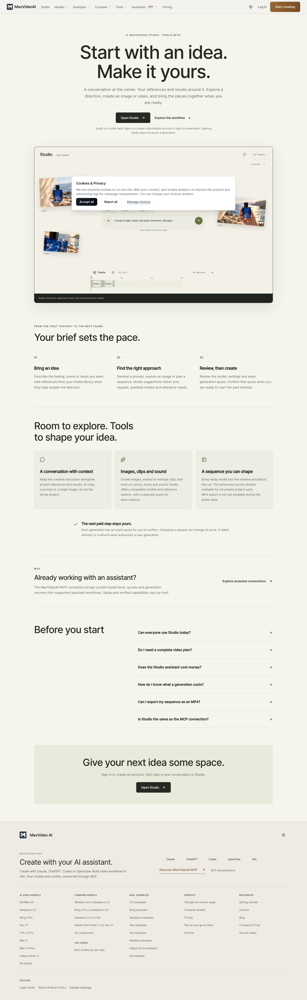
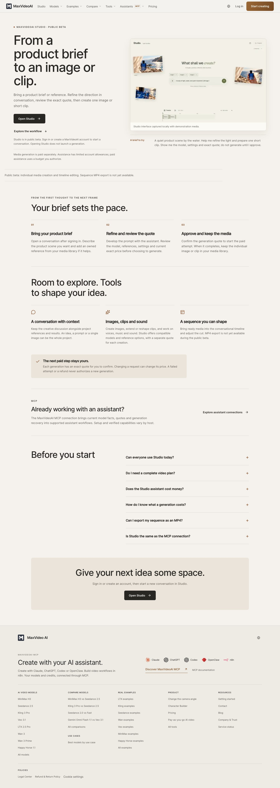
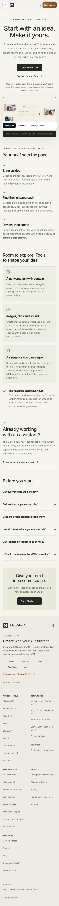
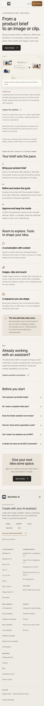
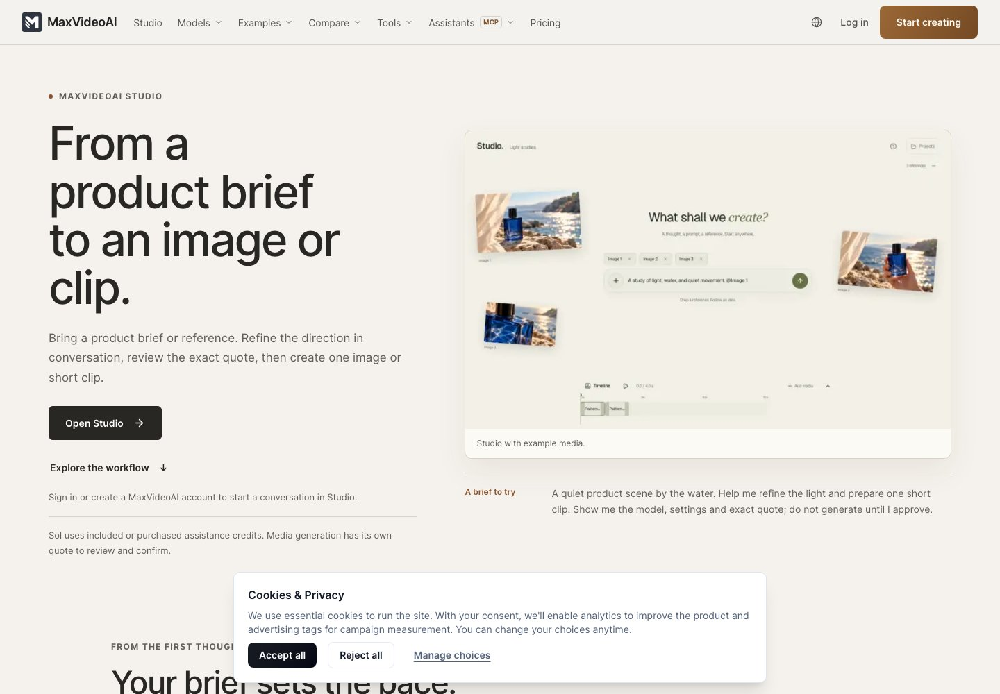
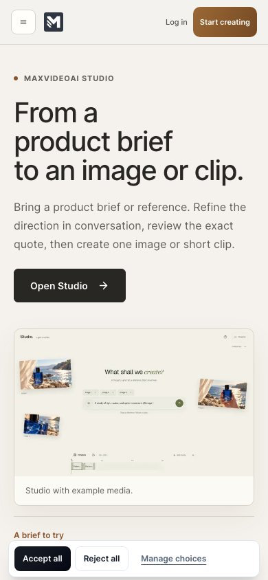

Claude Desktop users bring their product brief, connect MaxVideoAI, review an exact quote, explicitly approve and recover a clip.
Hypothesis, not measured ad performanceSite release candidate · 5 October 2026
One promise. A visible result.
A measured first use.
Prepared for Adrien on codex/ads-readiness-20261005. English master with French and Spanish adaptations. This dossier presents actual local pages, editable creative assets, verification evidence and explicit proof limits.
Adrien reviewed this dossier and authorized coordinated site delivery. The Studio task owns the final merge and production checks. Advertising campaign launch and spending remain outside this release. Existing proof is dated; illustrated stages are labelled. No new real paid generation or payment was performed.
Individual images, clips and audio from a creative brief, with references and timeline editing. Sol uses included or purchased assistance credits; media generation has its own quote. Originals remain accessible in the library.
One English market, one network after selection. €60 proposed media total; €80 ceiling with explicit reserve decision. No campaign created.
Read the launch sheetReview the actual pages
Compare the same desktop and mobile sizes. Full pages can be scrolled inside each frame. Before captures include the fresh consent banner; after entry captures below use the same fresh cohort. Main after captures show the normal “Reject all” state.
Open the local application · Changes and exact editable copy sources
Before · desktop

After · desktop

Before · mobile

After · mobile

English pages have same-size before captures; localized versions have after captures.
Same fresh-consent entry screenshots


Playable creative pack
Two openings, each adapted to horizontal and vertical layouts, in 24-second and 48-second cuts. These are review cuts. The sample motion is an existing product demo; connection and quotation scenes are illustrations; the 48-second cuts also include a dated controlled Claude still. The 24-second cuts omit that still. Ad rights and a fresh complete host capture remain prerequisites.
Creative rationale and capture limitsPack files, editable build and exportsEnglish hooks, description and CTASources, dates and rights
Two thumbnail directions
Exact local page text
Select a rendered route. This text includes installation instructions and FAQ answers captured by opening the existing disclosures. Editable source files are linked in the page report. The creative copy is separately linked above.
Preparing verified page text…
Evidence and remaining checks
Updated prioritized planBase / public / Desktop comparisonMeasurement definitions and changesCurrent installed Codex read-only checkChecks, performance and limitationsRoute, SEO, keyboard and image resultsBefore loading samplesAfter loading samples
Loading the report…
Local browser screenshots and diagnostic loading samples do not certify production Core Web Vitals. Real account creation, external assistant OAuth, production receipt attribution and GA4 property configuration require the separate isolated validation described in the reports.
Review decision and delivery
- Approve or revise Studio, Claude, Codex and MCP entry copy, hierarchy and cost/limit wording; inspect desktop/mobile and EN/FR/ES.
- Approve or revise openings A/B, all eight video cuts, captions, CTA and both thumbnails. Labels must retain the true proof status.
- Confirm the one-host Claude hypothesis or select the prepared Studio/Codex alternative before producing a fresh full demonstration and selecting one ad network.
Adrien reviewed the pages and authorized site delivery, with Studio launch wording refined to its enabled functions. The eight creative cuts remain drafts; rights, fresh host proof and a selected network are required before a paid pilot.